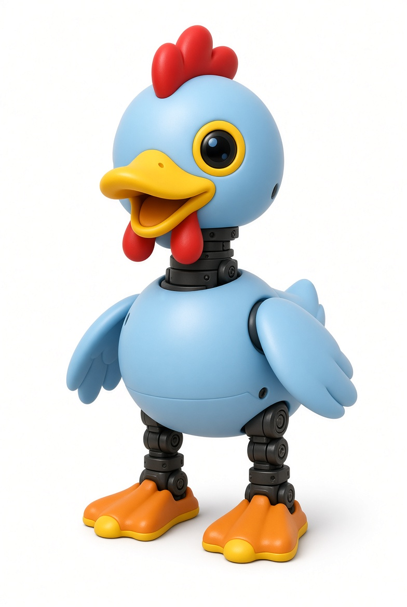

Vibe Chicken
一台用强化学习训练的小型双足机器人
产品概览
Vibe Chicken 是一台开源的 25cm 双足机器人，为学习而生。双腿、颈部、头部和抓取喙上的 15 个自由度赋予它真正的物理行动力——行走、踢球、抓取、起身。全套技术栈——SDK、仿真环境和强化学习训练管线——完全开源，并配备经过验证的 sim-to-real 工作流。在仿真中训练新行为，部署到机器人上，看它大摇大摆地走起来。
形态
25cm 双足 — 15 自由度，800g
算力
瑞芯微 RK3566 + AI 加速器
感知
相机、LiDAR、8×8 ToF、双 IMU
控制
15 个 Dynamixel 舵机，50Hz 策略循环
核心特性
真实双足运动
双腿、颈部、头部和喙共 15 关节。行走、踢球、抓取物体、从地面起身——在桌面上拥有真实的物理行动力。
强化学习
在仿真中用强化学习训练行为，通过经过验证的 sim-to-real 工作流部署。出厂预装 8 个训练动作，剩下的由你教会它。
完整感知栈
相机 + 紧凑型 LiDAR + 8×8 飞行时间深度矩阵 + 双 IMU（机身和头部）。它能看见、感知深度、并知晓自身姿态。
全程开源
SDK、仿真环境、强化学习训练脚本和工具完全开源。机器人上运行的就是你可以阅读、复刻和重新训练的代码。
开箱即玩
通过蓝牙连接或用游戏手柄。手机 App 通过 BLE 控制，相机画面通过 WebRTC 实时传输——无需训练也能立刻开玩。
50Hz 策略循环
专用控制守护进程在同步总线上以 50Hz 驱动全部 15 个舵机和 IMU——内置安全限制、跌倒检测和关节钳位。
硬件规格
算力
- 瑞芯微 RK3566 + AI 加速器
- 1GB 内存，32GB 存储
执行机构
- 15 自由度：每条腿 5 + 5（颈部/头部/嘴部）
- Dynamixel 舵机，1Mbps 共享总线
感知
- 相机（通过 WebRTC 实时传输）
- 紧凑型 LiDAR + 8×8 ToF 深度矩阵
- 双 IMU——机身 + 头部（<1ms 四元数）
连接
- Wi-Fi（手机 App 配置）
- 蓝牙 LE 手机控制
- 游戏手柄支持（USB / BLE）
感知与反馈
- 板载麦克风——40 频段 log-mel 音频特征
- 每个舵机的电压 + 温度监测
- 安全层内置跌倒检测和温度限制
电源
- 可拆卸 NP-F550 相机电池，2600mAh
- 视使用情况约 1 小时续航
尺寸
- 高 25cm
- 约 800g
系统与运行时
- Linux，签名 + 可回滚更新
- Rust 守护进程——robotd（控制）、mediad、tofd、btd、configd
软件与训练栈
开源 SDK
SDK 完整开源——每个守护进程、每个协议、每个策略配置都可读、可复刻。
仿真环境
带精确 MJCF 机器人模型的虚拟训练环境。
RL 训练脚本
预置强化学习训练脚本，训练行走、踢球、抓取等技能。
经过验证的 Sim-to-Real
验证过的 sim-to-real 工作流——仿真中训练的策略可无意外部署到真实机器人。
签名更新
OTA 更新经过签名，启动异常时机器人自动回滚。
远程查看
相机画面通过 WebRTC 传输到手机——随时随地看它学习。
使用场景
RL 研究
完整的双足学习平台——用真实硬件反馈训练运动、物体交互和跌倒恢复。
机器人教育
一个下午从仿真到现实。高校实验课、训练营和自学者都能获得完整管线。
极客娱乐
踢球、抓笔、在桌面上踱步。出厂 8 个行为开箱即用——无需机器学习背景。
表演艺术
编排行走、歌唱和动画。嘴部随音频开合——桌面上的机器人表演者。
嵌入式学习
在真实硬件上学习双电机同步、50Hz 实时控制循环和 Rust 守护进程架构。
AI 管线开发
从观测空间到奖励函数的策略优化的具体目标平台。
开源
什么开源
完整软件栈——SDK、仿真、RL 训练脚本和工具——在首批机器人发货前以开源许可发布。
跑的就是你读到的
机器人上运行的代码就是仓库里的代码。没有闭源二进制，没有黑盒——复刻、重新训练、重新部署。
预购与开发者计划
预购
$399
建议零售价 $499
包含：
Vibe Chicken ×1、15 个 Dynamixel 舵机、可充电 NP-F550 电池 ×1、USB-C 线 ×1、快速上手指南 ×1
开发者版
$499
预购全部权益 + 抢先 SDK 访问、3D 外壳模型、原理图、RL 训练工作坊
预计发货：2026 年 Q4